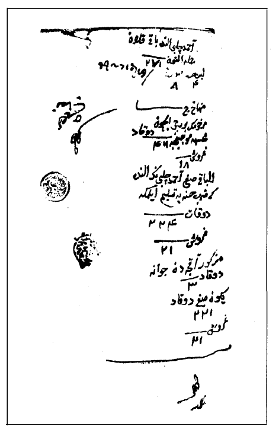
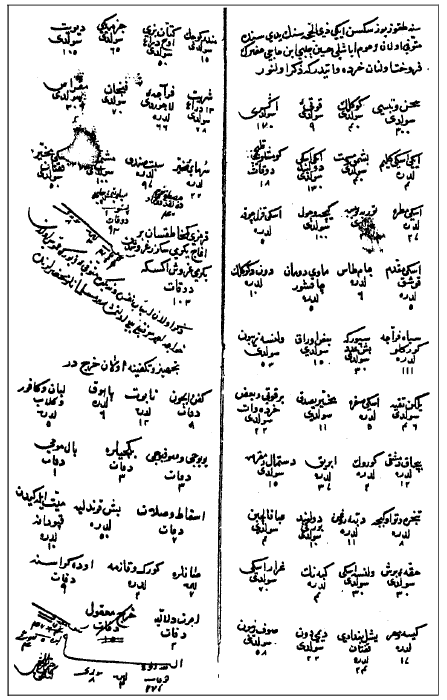

ASV, Letteri e scritti turchesche, filza 3, c. 54

ASV, Letteri e scritti turchesche, filza 3, c. 52
Aynı şekilde, imparatorluk haricindeki Müslümanlarla ilgili ticari meselelerde de, devlet, hiçbir zaman Müslümanların ülkeler arası ticaret yapmasını kısıtlayarak “yabancı etkileri asgariye indirme yolunda kutsal bir misyon” üstlenmişe benzemiyor. Ne Osmanlı İmparatorluğunun Türk tebası ne de idarecileri “yabancı kültür ve uygarlıkların baskıları ve yozlaştırıcı etkilerinden korktukları için Müslümanların kültürler arası ticaret yapmasına karşı çıkmışlardır. Bunun en iyi kanıtı, Osmanlıların dârü'l-İslâm dışında yaptıkları sistemli ve uzun süreli ticaretin, İslam hukuku yasaları çerçevesinde hükümet güvencesi altında ve tüm yasal haklardan yararlanarak yürütülmüş olmasıdır.
Anadolulu tüccarların kültürlerarası ticarete katılımları, özellikle de imparatorluk dışına çıkmayı gerektiren durumlarda, Osmanlı uygarlık tarihi açısından başka bir yargıyı da hatırlatır; Müslüman re'aya'nın yabancı kültürel etkilere hiçbir zaman açık olmayacağı varsayımı. Hatta, imparatorluğun on altıncı yüzyılın son üçte birinden başlayan “klasik sonrası” dönemde, Osmanlı toplumundaki Müslüman unsurların “geleneksel” değerlerine ve yaşam biçimine inatla sarıldıkları, yabancı düşmanı kesildikleri ve kâfir'le yapıcı ilişkiler kurmayı reddettikleri söylenegelmiştir. Erken modern Avrupa'nın geniş çaplı kültürel dönüşümlerinin Osmanlı kültürüne önemli etki yapmadığı iddiasında kuşkusuz büyük doğruluk payı vardır. Bu bağlamda, Bernard Lewis'in “Fransız devrimine gelinceye kadar dârül-harb’i dâr-ül-İslâm’dan ayıran engeli aşan, Müslüman yönetici ve düşünürler arasında hoşgörüyle karşılanan ve az ya da çok Müslüman toplumunun her katmanını etkileyen büyük bir fikir cereyanına rastlamıyoruz” görüşüne karşı çıkmak zor.{185} Ne var ki, kültürler arası etkiler meselesini Rönesans, Aydınlanma ya da parlamentarizm gibi şatafatlı ölçeklerde görmemiz gerekmez –bunların ilk akla gelen çıkış noktaları olduğunu itiraf etsek bile. Kahvenin ya da tütünün sahneye çıkması Osmanlı kültürel ve toplumsal (hatta politik) yaşamının geleceğini belirleyen hat üzerinde matbaa makinesinin kullanılmaya başlanması kadar etkili değil miydi? Oysa, bu malları İstanbul'da ilk kez pazarlayan, ilk kahvehaneleri açan, böylelikle de bu ortamın neşv ü nema bulmasını mümkün kılanlar birtakım tüccarlardı. Onların ciddi olarak tarihsel değişimin aracıları sayıldıkları, eğitimleri, girişimcilik becerileri ve pratikleri, maddi kültürleri, zihniyetleri ve toplumsal ilişkileri açısından incelenmeye değer bulundukları bir tarihçiliğin henüz uzağındayız. Dahası, odak noktamızı yukarıdaki büyük ölçekli dönüşümlerle kısıtlamamalıyız. Tarihlerinin “geleneksel” dönemi boyunca, Müslüman ya da gayrimüslim Osmanlıların gündelik hayatlarında ve popüler kültürlerinde yüzlerce mütevazı yenilik ya da ufak değişim boy göstermiş olsa gerektir. “Dâr-ül-harb'i dâr-ül-İslâm'dan ayıran duvarda” büyük gedikler açılmamış olsa bile, mutlaka çentikler ve çatlaklar vardı; bunları, Osmanlı Türklerinin değişen ticari sözlükçe ve pratikleri (mesela, poliçe kelimesinin kullanımı), tarımsal faaliyetleri (tütünün sahneye çıkması), yemek pişirme teknikleri (salçanın dört bir yanda boy göstermesi), süsleme konseptleri (üç boyutlu duvar resimleri), boş vakit geçirme alışkanlıkları (iskambil oyunları) ya da kişisel kullanım eşyalarında (cep ve duvar saatleri, gözlükler) görmekteyiz.
Osmanlı gündelik yaşamına yapılan bu mütevazı ilavelerin birçoğu, uzak diyarlara yolculuk eden kervanlarla gidip gelen tüccarların katkılarıydı herhalde. Bu katkılar muhakkak ki maddi yeniliklerle sınırlı değildi; geri dönüşlerinde uzak memleketlerde edindikleri yeni tadlar, hikâyeler ve bilgiler getiriyorlardı. On altıncı yüzyılda yazılan ve on yedinci yüzyılda çeşitli okurlar ve müstensihler tarafından derkenarlarla doldurulan Osmanlı coğrafyası hakkındaki en önemli eserlerden birinde, Hindistan ve Sudan hakkında bilgi kaynağı olarak seyyah tüccarlar iki kez zikredilir.{186} 1740'larda Hindistan'a yollanan Osmanlı elçisinin evvelce iş dolayısıyla Asya’ya gitmiş tüccar Yusuf Ağa'yı maiyetine katmış olması şaşırtıcı değildir.{187}
Kısacası, dini ya da siyasi olsun, Osmanlı yetkililerinin ideolojik sebeplerle iç ya da dış ticaret arasında ayrım güttüklerini ya da Müslümanların dış ticarete katılımını kültürel kirlenme korkusuyla dizginlemeye çalıştıklarını gösteren kanıt yoktur. Osmanlı toplumundaki Türk unsurunun yerel ticarette faal olduğu biliniyor; Türk tüccarlarının bazı Avrupa şehirlerindeki faaliyetlerine yönelik araştırmalarımızın ışığında, –hem askeri hem de re'aya sınıfından– Osmanlı Türklerinin uzak ülkeler ve değişik kültürlerle ticarete, aracı kullanarak ya da bizzat kendileri katkıda bulundukları da apaçık ortada. Bu ticari katılım, Avrupalıların Levant ticaretine katılımı kadar gösterişli olmamakla birlikte, epey bir süre devam etti ve Ankona ve Venedik'te resmi ikametgâh gerektirecek derecede belirgin bir hacme ulaştı. Bu arada tüccarlar da İslami hukuk kurumlarının tam desteğiyle ve Osmanlı devletinin himayesi altında hareket ettiler. Bu faaliyetin Osmanlı toplumsal ve kültürel tarihi açısından taşıdığı imaların hakkını vermek için daha nice araştırma ve tartışmaya ihtiyacımız var.
Avrupa kentlerine giden tüccarların, götürdükleri gibi, görülmemiş mallar ve bilgilerle geri geldiklerini, bunların da Osmanlı toplumunun diğer unsurlarına nüfuz etmiş olduğunu tahmin etmek çok tabiidir. Osmanlı kültür hayatındaki bu iletişim kanalının rolü ancak tüccarların Venedik deneyimlerinin ve kurdukları sosyal-kültürel bağlantıların yeniden inşası sonucunda gereğince değerlendirilebilir. Bu bağlantılar yabancı tüccarlar ve simsarlarla kurulan ticari ilişkilerin yanı sıra, kuşkusuz Venedik'te ikamet eden çeşitli “sabık Osmanlılarla” karşılaşmaları da içeriyordu. Mühtediler, kaçan ya da azad edilen köleler Venedik’i ziyaret eden Osmanlılara dostça değil düşmanca yaklaşmış olabilirler; ama, kendi iradeleriyle Venedik’e yerleşmiş eski Osmanlı Ermenilerini içeren hatırı sayılır büyüklükteki Venedikli Ermeni cemaatinin en azından bazı mensuplarıyla seyyah tüccarlarımız arasında nazikane ilişkiler kurulmuş olabilir.{188} Venedik'te geçirdikleri zaman zarfında Osmanlı tüccarlarının çeşitli yabancı âdetler, törenler, karnavallar, en azından halka açık yerlerdeki sanat eserleri ve belki de basılı kitaplarla tanıştıkları tahmin edilebilir. Bazı Türk ziyaretçilerin Doj Sarayına yazdıkları duvar yazısı parçaları onların bu yabancı çevreyle aktif bir alışveriş içinde olduklarını gösteriyor.{189} Gene de, Venedik deneyimlerinden neler edindikleri ve memleketlilerine ne kadarını aktardıkları daha kişisel kaynaklar –özel mektuplar, muhasebe defterleri, seyahatnameler, vb.– keşfedilip incelendiğinde ortaya çıkacaktır.
Venedik arşivlerindeki belgeler tüccarların faaliyetlerini betimlemek için değil, münferit, kimi zaman sıradışı vakaları çözüme kavuşturmak üzere tertip edilmişlerdir. Zaman zaman bir vaka birden fazla belgeye yayılsa da, bunlar çoğunlukla birbirinin çevirisi ya da aynı konunun değişik yetkililere hitaben kaleme alınmış farklı ifadeleridir. Gene de, tüccarların geldiği memleketleri ya da mallarının niteliğini ve daha seyrek de olsa miktarını, aynı zamanda seyahat güzergâhlarını ve ne vasıtayla seyahat ettiklerini, bazen de daha fazlasını bu kaynaklardan öğrenebiliyoruz.
Elimizde, 20 Mart 1575'te Venedik'te öldürülen Ayaşlı sof tüccarı Hüseyin Çelebi bin Hacı Hızır bin İlyas'a ilişkin bir grup belge vardır. Olay sırasında amcası (‘ammûsi) Ahmed bin Kassab da Venedik'teydi ve olaydan sonra cenaze işleriyle ilgilenmişti. Hüseyin Çelebi'nin ölümünden kısa bir süre sonra, örneğin, amca merhumun bir Venedikli ve iki Flaman tüccarla yaptığı sonlanmamış bir anlaşmayı çözüme kavuşturan bir noter mukavelesi imzalamıştı. Buradan da anlıyoruz ki, Venedik'te bulundukları süre zarfında Osmanlı tüccarlar sadece İtalyanlarda değil, başka Avrupalılarla da irtibattaydılar.{190} Tüccarımızın Türkçe kaleme alınıp 8 Nisan 1575'te İtalyancaya çevrilen tereke'si, noter mukavelesinden daha da aydınlatıcıdır.{191} Tereke, Hüseyin Çelebi'nin Venedik'te amcası tarafından “Müslümanlar huzurunda” satılan kişisel eşyalarının bir listesini, defin masraflarını, ayrıca bazı borç ve alacaklarını içermektedir. Gayet tabii, sermayesi ayrı bir kategoride ele alınmıştı, çünkü bu deftere bakılırsa sadece 221 dükalık (yaklaşık 13,260 akçe) bir varlığı olduğu görülüyordu, fakat iki yıl sonrasının tarihini taşıyan başka bir belge merhumun mirasının tümünü 128.000 akçe (yaklaşık 2,133 düka) olarak belirliyor.{192} Galata kadısı tarafından 4 Nisan 1577'de tanzim edilmiş bu sicil'e göre, olaydan iki yıl sonra, Hüseyin Çelebi'nin babası Hacı Hızır bin İlyas, oğlunun mirasının tamamını hâlâ alabilmiş değildi: kendisine 48.000 ve 40.000 akçelik iki taksit ödenmiş, kalan 40.000 akçeyi de belgenin tanzimini takip eden yedi gün içinde alacağı vadedilmişti.
İnalcık'ın on beşinci yüzyıl Bursa kadı sicilleri üzerinde yaptığı incelemeler, tereke tanzimi sırasında şahsi eşyaları ya da ev eşyalarını sermayeden ya da nakitten ayırmanın âdet olduğunu ortaya koymuştur.{193} Daha yakın bir örnek için, bizim Hüseyin Çelebi'den yirmi yıl sonra imparatorluk dışında ticaret yaparken ölen iki Müslüman tüccarın terekelerine bakabiliriz; onlardan geri kalan mülkün dökümü Dubrovnik'te Osmanlı yetkilileri tarafından Hicri 999'da (1590/91) çıkarılmıştı.{194} Her iki vakada da ilk olarak ölen tüccarların sermayelerini oluşturduğu aşikâr olan kumaş topları kendi başlarına bir kategori olarak ele alınır, ondan sonra ise geri kalan nakit ve şahsi eşya (ve sâir nukûd ve esbâb). Hüseyin Çelebi'yle ilgili olarak, elimizde sadece ikinci bölüm var; hatta, belgenin tepesinde bunun bir “ufak tefek” (hurdevât) listesi olduğu özellikle belirtilmiş. Bu eksik yüzünden Hüseyin Çelebi'nin hesaplarının tam bir resmini çıkaramıyorsak da, onun “ufak tefeği” aracılığıyla bir Osmanlı gezgin tüccarının maddi kültürüne göz atabiliriz.
Mart'ta Venedik'te bulunduğuna göre, Hüseyin Çelebi ya kışın yolculuk etmişti ya da belki de seyahatini 1574'ün yaz ya da güz mevsimine denk getirmiş, böylece kış aylarını da memleket dışında geçirmişti. Bu yüzden, giysileri arasında kışlık kıyafetler de bulunuyordu. Ayaklarına giymek için sadece başmak’ları (ayakkabıları) ve mest'leri (birincinin içine giyilecek terlik-pabuçlar) değil, “yeni” olduğu belirtilen bir çift çizme'si de vardı; “yeni” oluşları bunların yolda kullanılmadıklarını düşündürüyor, belki de onları Venedik'ten satın almıştı. Muhtemelen, çizmelerin içine giymek için, kalçalarına kadar çıkan kaba yünden bir iç donu da (aba kalçin) edinmişti.{195}
Çeşitli üstlükleri de vardı ve bunların arasında onun en kıymetli giyecek eşyaları olan iki ferace göze çarpıyor. On altıncı yüzyıl Budapeşte’sinde askeri sınıftan tüccarlık yapan birinin sandığında 23 parça ferâce'ye rastlayan Pekete'ye göre, ferâce “Kleidungsstück der gebildeten Leute - seçkin kişilerin giyim eşyası” idi; Türkçe sözlükler bu giysiyi ulema ile bağdaştırır.{196} Anladığımız o ki, en azından on altıncı yüzyılda, ulema dışından bazı kimseler de ferace giyen “gebildete Leute” kesimindendi. Bizim Hüseyin Efendi'den on yedi yıl sonra, Dubrovnik'de terekeleri kaydedilen iki Osmanlı tüccarı da yanlarında ferace götürmüşlerdi; bir tanesinde kenarı kürkle çevrili tek bir parça, ötekisinde ise biri kuzu postuyla kaplı olmak üzere dört parça ferace vardı. Hüseyin Efendi'nin biri lacivert diğeri siyah feracelerinde, anlaşıldığı kadarıyla kürk ya da deri süsleme yoktu ama bir tanesi kötü havalar için özellikle kullanışlı bir aksesuara sahipti; kukuletalıydı (körüklü). Tahmin edilebileceği gibi bu ferace ötekinin neredeyse iki katı değerindeydi (biri 111, diğeri 66 liret.) Yolcumuzun bir de keçeden, kolsuz ceketi (kebenek) vardı ki bu da sadece 4 lirete satılmıştı.
Koruyucu işlevler bir yana, Hüseyin Çelebi’nin en önemli giysileri, günümüzdeki elbiselere ya da takım elbiselere denk düşen iki kaftandı. Bunlardan bir tanesi oldukça kullanılmış bir yünlü (muhayyer) giysi (50 soldi), ötekisi ise bağdâdî yeşil bir elbise olup birincisinden çok daha pahalıya (24 liret) satılmıştı.{197} Yünlü bir kışlık giysi olduğu (sermâ'î-yi muhayyer) özellikle belirtilen bir başka yünlü de hemen hemen aynı fiyata (22 liret) gitti. Yalnızca 5 lirete satılan çuka ise muhtemelen kısa bir ceketti çünkü İtalyan çevirmen onu küçültme formunda (vesticciola) çevirmiş. Üzerine giydiğinin şekli bozulmasın diye, Hüseyin Çelebi ipek bir kuşak (mukaddem kuşak) kullanmış ki bu kuşak satışa çıkarıldığında yıpranmış bir haldedir. Kaftan'ın altında zibunlar da (yelekler) eksik değildi ki tüccarımızda bunların bir tane softan (58 soldi), bir tane de velense'den olanı (53 soldi) vardı. Bunların altına giymek içinse, ucuz dimi’den bir don (pantalon), bir gõňlek (gömlek), muhtemelen takım olan bir don ve gõňlek ve mavi bir çakşır (mavi duman çakşur) arasında seçim yapabilirdi.
Başını örtmek içinse Hüseyin Çelebi'nin biri burgı olarak tarif edilen üç parça hafif pamukludan dülbend’i vardı. Kış soğuğuna maruz kalacaksa, körüklü feraceye alternatif olarak, modaya uygun yelken takye'sini (kulaklıklı başlık) kafasına takabilirdi.{198}
Uzun mesafe yolcumuz yanında sıcak tutan çeşitli örtüler de taşıyordu: velense, keçe, çul (at örtüsü). Bu sonuncusu muhtemelen Hüseyin Çelebi'nin kiraladığı ve Anadolu'da ve Balkanlarda üzerine bindiği katırlar içindi; terekesinde bir de eğer vardı ki muhtemelen bunun altına da velense'sini seriyordu. Daha rahat yolculuk için, kilimlerinden birinden birinin üstüne yerleştireceği bir yastığı (muhayyer yasdık) vardı; bunlardan bir tanesini seccade olarak da kullanmış olabilir.
Bir parça ip (şerit) ve uzunca bir pamuklu parçası da (kettân bezi), Hüseyin Çelebi'nin terekesinde karşımıza çıkan ve kuşkusuz çeşitli torba ve kutularda (torba, heybe, garrâr, 2 tane kutu) saklanan ufak tefeğini bağlamakta işe yaramış olmalı. Nispeten daha değerli olan sebet sanduk'un ise İtalyanca belgede bir kumaş sandığı olduğu özellikle belirtilir, herhalde satmak üzere Venedik’e götürdüğü kumaşları koymak içindi. Beş tane süpürge de işiyle alakalı olmalı, burada da gene İtalyanca çeviride kullanılan scovoli kelimesi ipucu sağlamaktadır, anlaşılan tüccarımız mallarının tozunu almaya ve onları daha göz okşayıcı kılmaya değer veriyordu.{199} Bu süpürgeler kumaş tüccarları tarafından yaygın biçimde kullanılıyordu herhalde; Dubrovnik'te tutulan terekelerin birinde, daha açık biçimde çuka süpürgesi olarak tarif edilen on üç parça kayıtlıdır. Bir kumaş tüccarı için kesici alet de aynı derecede önemliydi; bir makas (mikrâs) bu görevi yerine getiriyordu. Mallarını yağmurdan korumak için üç adet de muşamma'sı (muşamba) vardı.
Birçok anlaşma imzalamak zorunda kalan bir tüccar olarak, Hüseyin Çelebi'nin yanında bir kese (kîse) içinde şahsi mühür'ü ve bir de kalemlik (divit) vardı. Kendisine ait bazı kâğıt parçalarının (ba'zı evrâk, İtalyanca çeviriye bakılırsa “iki” evrak) satışı ise daha da merak uyandırıcıdır. Bunlar şahsi notları ya da hesapları ya da onun adına çıkarılmış resmi evrak ise, kim ve neden bunları satın almakla ilgilenmiş olabilir? Neyse ki, mesele İtalyanca çeviriyle çözüme kavuşuyor; orazion. Anlaşılan tüccarımız bazı dua metinlerini de yanında getirmişti, bunları ya okuyacak ya da sadece selametle yol almak üzere muska olarak yanında taşıyacaktı.
Bir ticaret adamı olmasına karşın, Hüseyin Çelebi'nin yanında birkaç parça silah da vardı. Hatta ticaretini yaptığı kumaş topları dışında sahip olduğu en kıymetli şey, bir gümüşlü kılıç Venedik pazarında 18 dükaya satılmıştı. Ayrıca, özellikle yemek hazırlamakta daha çok işe yaramış olması gereken bir Şam bıçağı da (bıçak-i dımışkî) vardı.
Tüccarımızın yanında, mutfak işleriyle özellikle ilgilendiği için mi çeşitli mutfak eşyaları vardı yoksa tüccarların bunları beraberlerinde getirmeleri gerektiği için mi? Çünkü bazı kervansaraylara inenler “çıplak dört duvardan başka... pek bir şey beklememeli”ydi ve “tedarik edilecek öteki şeyleri, et, içecek, yatak, ateş, hayvan yemi, bütün bunları kendileri tedarik etmeye bakmalı”ydı.{200} On beşinci yüzyıl sonlarında Bursa'da ölen iki gezgin tüccarın terekelerinde de benzer kalemler var, fakat birinde bunlar sayıca çok az, diğerinde, yine Ankaralı bir sof tüccarınınkinde ise, yemek pişirme işi terekenin parçası olarak görünen iki köle kız tarafından yapılmış olmalı.{201} Dahası, Dubrovnik'te bulunan terekelerin ikisinde de yemek pişirmekle alakalı araç gerece rastlanmıyor; Hüseyin Çelebi'nin geride bıraktığı “ufak tefek” tüccarımızın biraz midesine düşkün olmuş olabileceğini düşündürüyor. Herhalde, deriden yapılma körük'ü ile ateşi besliyor, ateşin üzerine bakır tencere'sini ya da tava’sını oturtuyor ve özel bir kutuda (debbe-i revgan) yanında taşıdığı tereyağda hazırladığı yemeği karıştırmak için de bir kepce kullanıyordu. Yemeği servis etmek için, (bakır?) bir sahan ve bir tepsi kullanıyor ve hatta daha da rahat yemek yemek için yanında katlanır bir sofra taşıyordu. Mendil (destmâl) ve peçete (makrama) olarak hizmet görmüş olmaları muhtemel iki bezden en az biri yemek yerken kullanılmış olsa gerek. İçmek için, (deri?) bir matara, bir cam bardak (cam tas) ve küçük bir kahve fincân'ı kullanıyordu. Yemeklerden önce ve sonra elini yıkamak ve abdest almak için, yanında bakır bir ibrik de taşıyordu ki bunu su ısıtmak için de kullanmış olabilir.
Mükeyyifata düşkün olduğu anlaşılan çelebinin terekesinde bir de afyon hokkası (hokka-i berş) vardı.
Hüseyin Çelebi'nin şahsi eşyaları “Venedik'te amcası tarafından Müslümanların huzurunda” ve yukarıda sayılan ufak parçaların topunun iki katı değerinde olan iki denk kumaşla birlikte satıldı. Muhtemelen Venedik'te imal edilmiş kumaş ihtiva eden bu iki denk, tüccarımızın kendi malıyla takas ettiği malın bir kısmı olmalı. Örneğin, İtalyanca çevirinin sonundaki bir nota bakılırsa, Hüseyin Çelebi sof kumaşlarından bir miktarını Nicolo Priulli'nin panni di lana’sıyla takas etmiş, bu alışverişten Priulli'ye borçlu kalmış, borcunu da ölümünden sonra amcası kapatmak zorunda kalmıştı. Bu yolla, öldüğü sırada epey bir Venedik işi kumaş biriktirmişti. Bu malların satış fiyatları terekenin alacak hanesine, Hüseyin Çelebi'den ölümünden önce borç almış olduğunu anladığımız Venedik'te bulunan bir başka Osmanlı tüccarı Mustafa Hoca'dan aldığı 40 düka ile birlikte kaydedilmiştir.
Öte yandan, Hâce Ahmed, yeğeninin borçlarından bazılarını kapatmak zorunda kalmıştı; yukarıda bahsi geçen Nicolo Priulli'ye, “Emirgian turco”ya, bir miktar zambellotti satışında yardımcı olan bir simsara olan borçları gibi. Merhum aynı zamanda oda kirası olarak da 9 düka tutarında büyükçe bir borç bırakmıştı, bu da odayı kiralayan kadına ödendi. Alman tüccarların yıllık oda kirası olarak 8 ila 12 düka ödedikleri Fondaco dei Tedeschi'deki kira bedelleri, serbest piyasa değerleri açısından çok uçuk değillerse, Hüseyin Çelebi Serennissima'da bu kadar borç biriktirecek kadar uzun süre kalmış demektir.{202}
Hüseyin Çelebi'nin defni için yapılan masraflar daha az fakat daha iç burkucu. Ayrıntılı kayıtlardan anlaşılan, İslami kurallara uygun biçimde defnedilmişti. Ölmüş tüccarın bedeni bir yıkayıcı ve su dökücü (yuyucı ve su koyucı) tarafından temizlendikten sonra, libân, kâfur ve gülâb (gülsuyu) ile oğulmuş, sonra bir kefen'e sarılıp tabut'a konulmuştu. Ölünün taksiratını affettirmek için sadakası dağıtıldı (Venedikli fakirlere mi?) ve allaturchesca dualar okundu (ıskât ve salât). Merhumun tabutu bir gondola konuldu. Yeğenine usulüne uygun bir İslami cenaze tertip etmek için olanca ihtimam gösteren, ama tabuta eşlik eden gondolcuya (meyyit ile giden kapudan) verilen bahşiş ve kazma küreğe kadar her masrafı terekeden ödeyecek kadar gerçekçi ve hesabını bilen biri olan Hâce Ahmed bin Kassab ve Müslüman tüccar cemaati de beş gondola (beş kondelye) bindiler. Kafile, Hace Hızır bin İlyas oğlu Ayaşlı sof tüccarı Hüseyin Çelebi'nin gömüldüğü meçhul mezara doğru Venedik'in sazlık lagunalarından yola çıktı.